Breast cancer remains one of the most prevalent and life-threatening forms of cancer among women worldwide. Despite advancements in early detection and treatment, predicting patient outcomes and tailoring personalized therapies remains difficult due to the biological complexity of the disease. One of the key challenges in breast cancer management is the high degree of heterogeneity at both the clinical and molecular levels, which complicates prognosis and treatment decisions. However, gene expression profiling has emerged as a powerful tool to uncover the biological underpinnings of breast cancer heterogeneity and to predict clinical outcomes. The landmark study by Van ’t Veer et al. [1] demonstrated that gene expression signatures could be used to predict breast cancer prognosis, laying the groundwork for molecular subtyping and personalized therapy. Building on this, large-scale analyses, such as Curtis et al. [2], revealed novel breast cancer subgroups based on combined genomic and transcriptomic data, underscoring the complexity of the disease. Further research has highlighted the relationship between gene coexpression networks and clinical outcomes. For instance, Clarke et al. [3] performed large-scale coexpression analyses and found that specific transcriptional networks were significantly correlated with breast cancer survival. Such findings emphasize the value of moving beyond single-gene analyses toward understanding complex gene-gene interactions.
Building on this body of work, this project leverages the METABRIC dataset [4], introduced by Curtis et al. [2], to build machine learning models for patient classification and outcome prediction. The dataset includes gene expression profiles and clinical data for nearly 2,000 breast cancer patients. The dataset provides detailed information on over 600 genes as well as clinical variables such as patient age, tumor size, hormone receptor status, and survival outcomes.
Problem Statement
Breast cancer prognosis remains challenging due to the high clinical and molecular heterogeneity of the disease, limiting the effectiveness of generalized treatment approaches. While gene expression profiling has shown promise in stratifying patients and predicting outcomes, current methods often fail to capture the complexity of gene-gene interactions. This project aims to leverage the METABRIC dataset to develop machine learning models that integrate gene expression and clinical data for more accurate breast cancer patient classification and survival outcome prediction. Further, we hope to develop a machine learning model acceptable to the medical community, capable of classifying different types of breast cancer with high recall and precision.
Proposed Methodology
Basic Overview of Data:
The METABRIC dataset contains 30 clinical features, m-RNA expression levels (z-score scaled) for 489 genes and mutations (binary features) reported in 173 genes.
Target Column Selection:
Out of the 30 clinical features present in the dataset, the pam50 + claudin-low subtype column was treated as our target variable, over other columns such as cancer_type and cancer_type_detailed.
The granularity provided with the pam50 + claudin-low subtype column is much higher (classes including luminal A, luminal B, HER2-enriched, Basal-like, Claudin-low, and normal-like) than the other columns - cancer type (classes include breast cancer or breast sarcoma) or cancer type detailed (Breast Invasive Ductal Carcinoma, Breast Mixed Ductal and Lobular Carcinoma, Breast Invasive Lobular Carcinoma, Breast Invasive Mixed Mucinous Carcinoma and Metaplastic Breast Cancer).
Moreover, the pam50 + claudin-low subtype provides molecular resolution to the problem, over the coarse binary classification provided by cancer_type or structural resolution (ductal, lobular) provided by cancer_type_detailed. The pam50 + claudin-low subtype shows direct association with the ‘aggressiveness’ of the cancer and can offer better biological insights in terms of treatment options.
Exploratory Data Analysis
Clinical Data
Histograms: We plot stacked histograms for each column in the clinical areas subset to visually assess if these variables differ by breast cancer subtype. In doing this, we hoped to achieve the following two goals: (a) find clinical variables that differ between subtypes by visually spotting shifts in distributions between classes and (b) guide feature selection e.g., if distributions for all subtypes look identical, that feature may have low predictive power. In the interest of space, we only present results for the most relevant histograms.
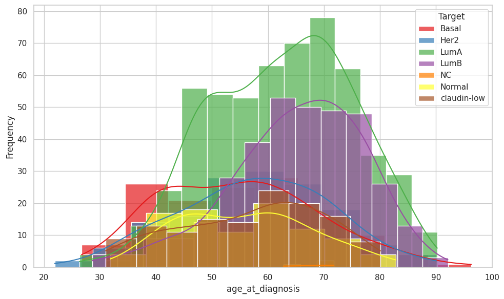
Figure 1: Histogram for Age at Diagnosis
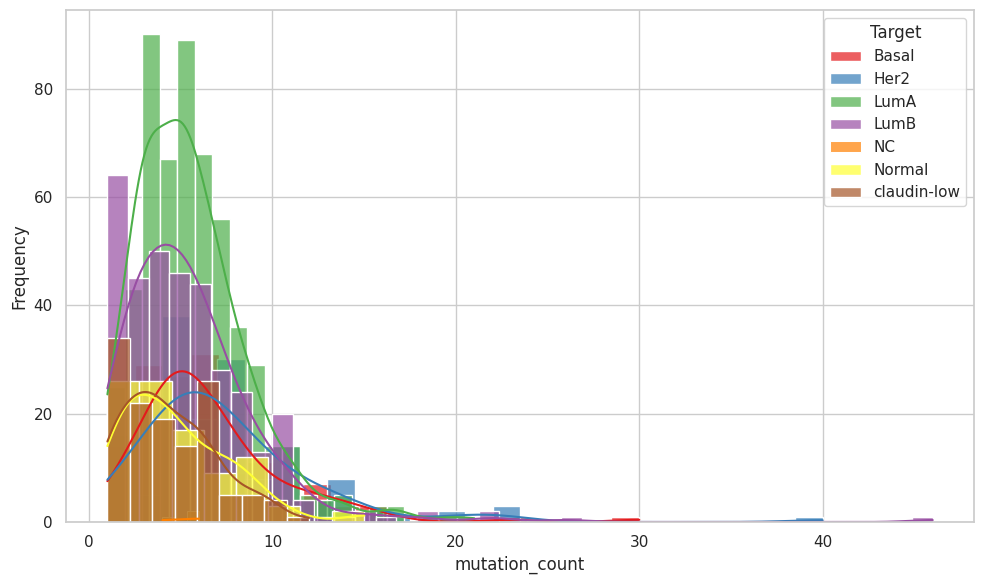
Figure 2: Histogram for Mutation Count
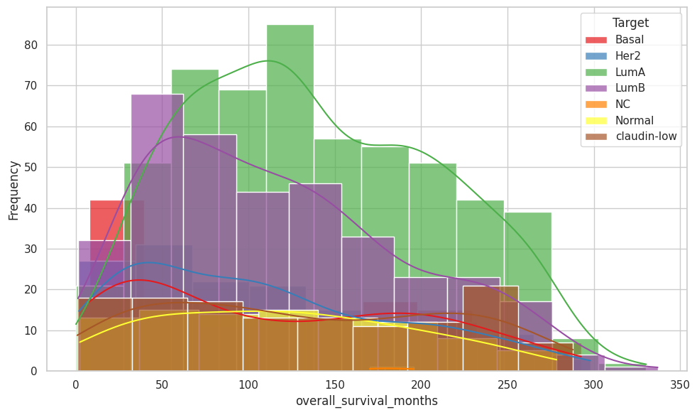
Figure 3: Histogram for Overall Survival Months
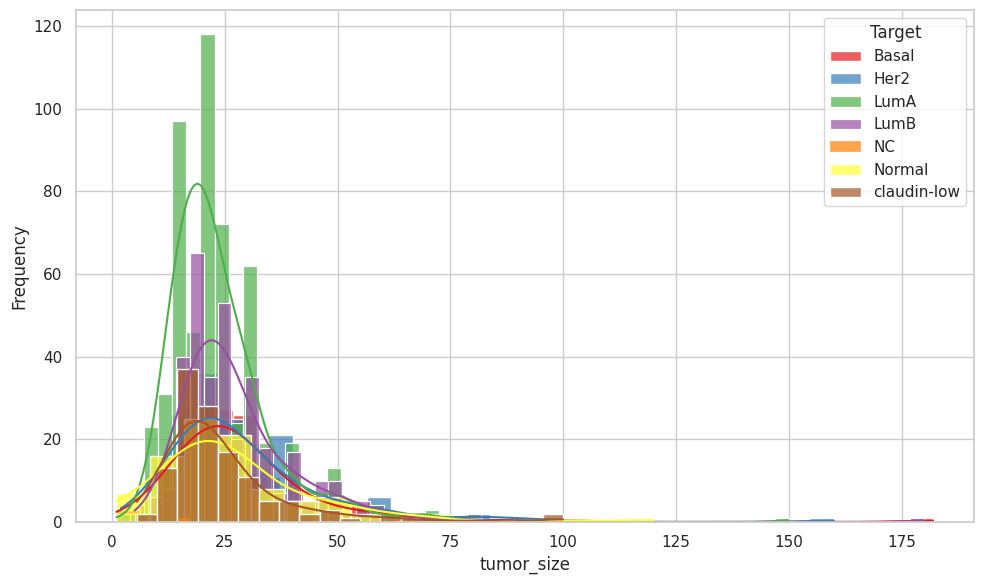
Figure 4: Histogram for Tumour Size
Age at Diagnosis: For the “Basal” subtype, the age range is skewed to the left i.e., most of the data points are between 40 and 70. However, for the “LumB” subtype, we see that most of the data points are between 55 and 95.
Mutation count - For the ‘Normal’ and ‘Claudin-low’ subtypes, mutation count is skewed to the left. However, for the other subtypes, we see higher mutation counts.
Overall survival months: We see that this attribute is relatively identically distributed across all subtypes (skewed to the left). However, for the “Basal” subtype, the number of months is uniformly distributed, indicating that patients with this type are likely to survive longer.
Tumour size: We see that tumour size is identically distributed across all subtypes, which tells us that this attribute is independent of subtype.
Boxplots: Boxplots provide a compact visual to assess the distribution differences between classes. In addition, it provides a visual assessment on the number of outliers and skewness of the feature. Below are the boxplots for the selected four clinical features, 'Age at Diagnosis', 'Mutation count', 'Overall survival months', and 'Tumour size'
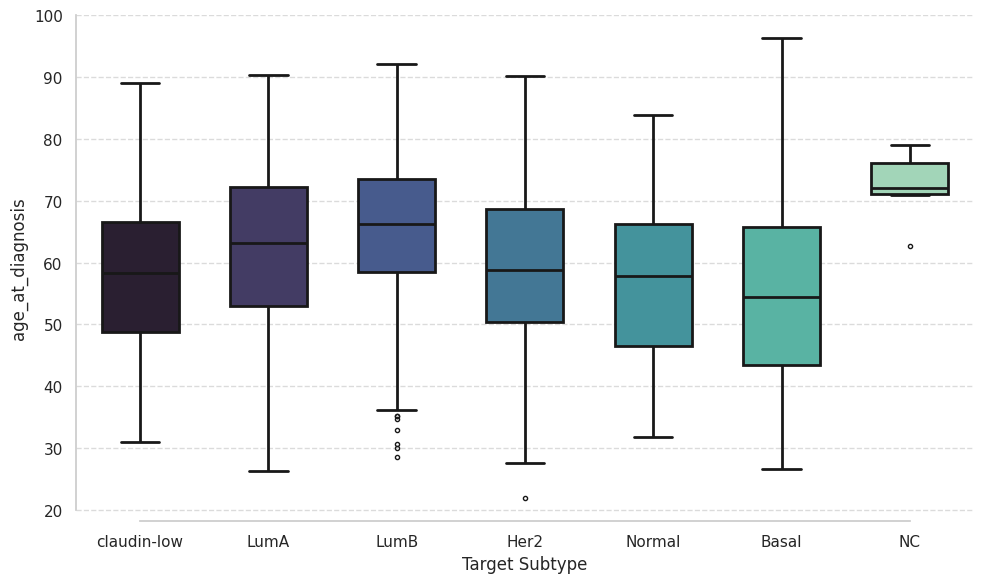
Figure 5: Boxplot for Age at Diagnosis
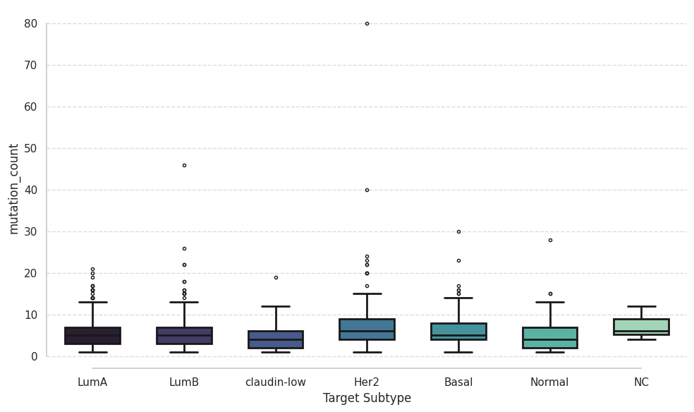
Figure 6: Boxplot for Mutation Count
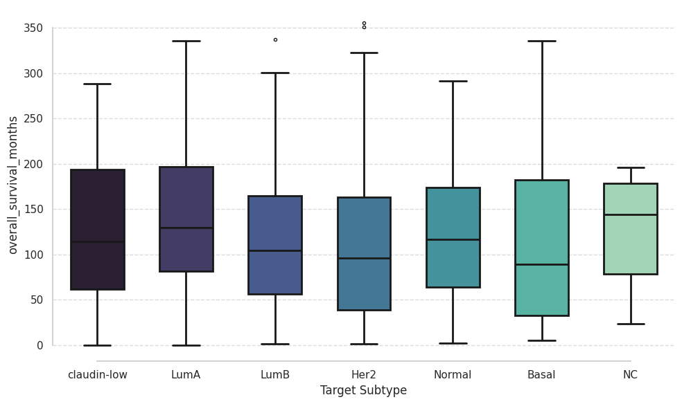
Figure 7: Boxplot for Overall Survival Months
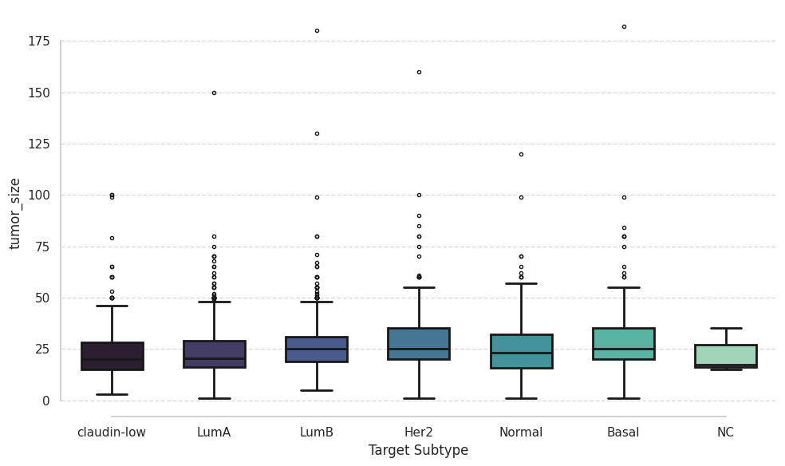
Figure 8: Boxplot for Tumour Size
Pair Plots: Pairplots can help in observing distributions of the feature and also provide spread of values based on the target classes when points are class-colored. It also provides a visual on the nature of the correlation between two features and this serves as a very important first step towards correlation handling.
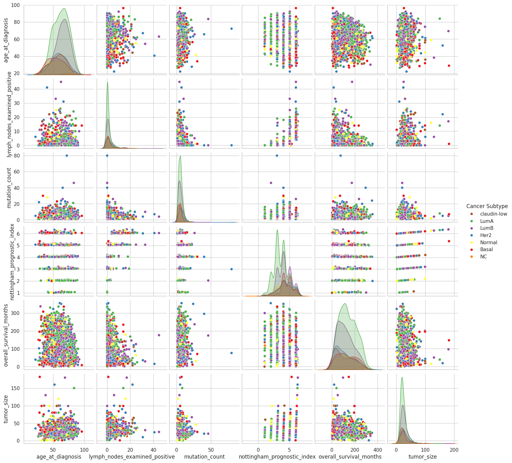
Figure 9: Pairplots
Genes Data
Principal Components Analysis (PCA): As the gene-data encompasses 400+ features, the genes data is linearly reduced to 2D dimensions and colored based on the classes. This visualization helps in understanding the underlying nature of the dataset.
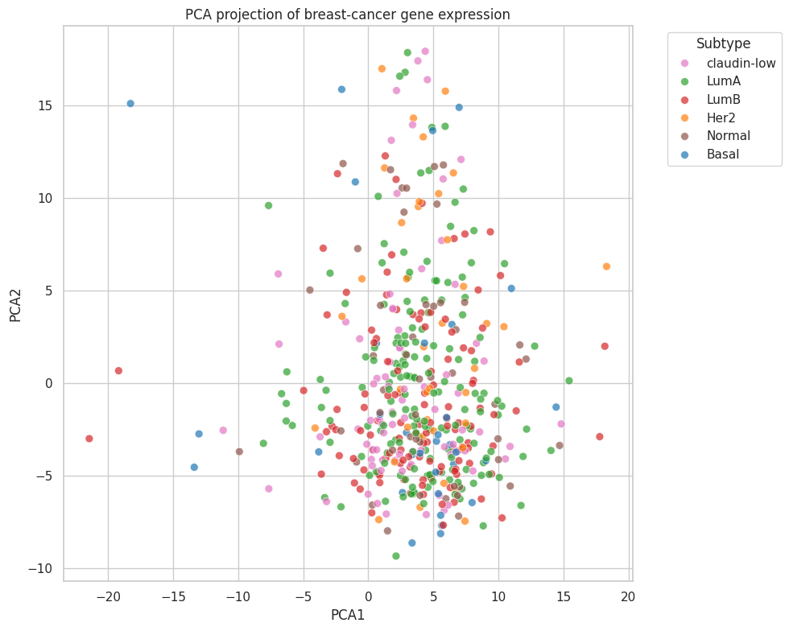
Figure 10: Principal Components Analysis for Genes Data
Uniform Manifold Approximation and Projection (UMAP): Non-linear reduction of 400+ genes features to 2 components.
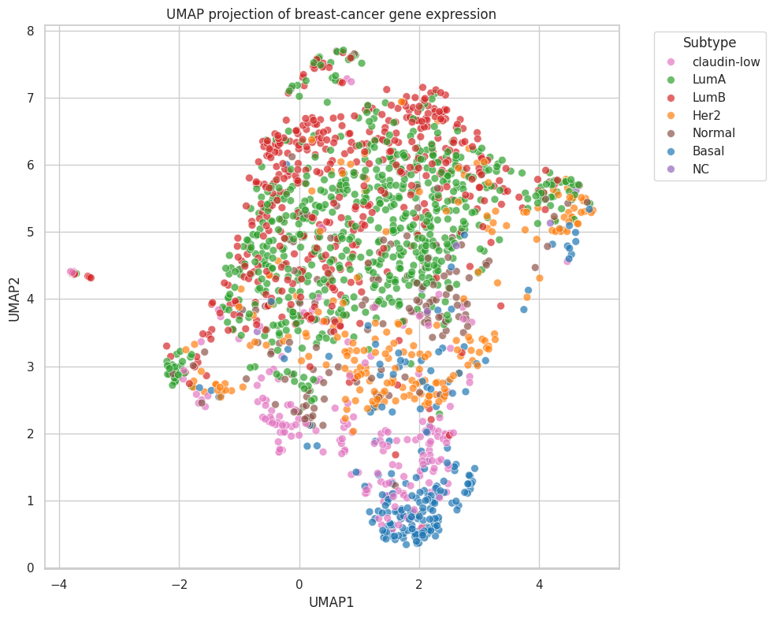
Figure 11: Uniform Manifold Approximation and Projection for Genes Data
Clustering: This optional step was taken to assess the quality of genes data in addition to the above visual steps.
Our motive here was to see how easy it is to separate the 7 classes we have with purely genes data in an unsupervised fashion. In this way, we can understand if there is an underlying pattern for any of the classes. If an unsupervised approach yields clusters similar to the ground truth, then a supervised model should be able to achieve a good performance as well.
If few clusters actually capture the ground-truth cluster/class, then a supervised model should perform well in classifying patients of this class inherently well than other classes.
In general, the number of genes present in such experiments are generally in the order of 10000. K-means, GMM, and any other distance metric based clustering algorithms may fail to perform well.
In such cases, other approaches for clustering methods such as Leiden and Louvain clustering (graph based approaches) are highly recommended.
For simplicity, we tried K-means clustering on the 489 genes features present. Metrics such as adjusted rand index (ARI), normalized mutual information (NMI), homogeneity and completeness scores, and Fowlkes-Mallows index were computed to understand the quality of the clustering.
Table 1: Evaluation Metrics for KMeans and GMM Clustering
Metric
K-Means
GMM
ARI
0.20
0.17
NMI
0.30
0.18
Homogeneity
0.31
0.16
Completeness
0.30
0.20
V-Measure
0.30
0.18
Fowlkes-Mallows
0.37
0.41
Feature Pre-processing
A robust feature preprocessing pipeline is created to handle missing values and outlier presence. Prior to any form of feature pre-processing, the dataset was split into training and test dataset (80% development dataset and 20% testing), to avoid data leakage.
Clinical Data
Imputation: The clinical data is a mixture of numerical (float64) and categorical (object) data types. They need to be handled separately. As clinical data is often MNAR [missing not at random] type, it can get tricky in choosing the best imputation method. Keeping this nature of MNAR data, we chose KNN imputer for numerical features and Mode imputer for categorical features.
Outlier Treatment: Models that heavily rely on distance metrics or linear assumptions are more sensitive to outliers than other models. It is thus advised to perform outlier treatment prior the learning process.
To reduce the ill-effects of such noisy points on the model, the pipeline designed detects outliers through inter-quartile range (IQR) method. For a given numeric feature, if a value here falls outside the range (Q1-1.5*IQR , Q3+1.5*IQR), it is treated as an outlier.
If a value is below the lower limit, then it's value is augmented to lower limit and if the value is greater than the upper limit, then it is mapped to the upper limit. Such a method is referred as IQR clipping.
Scaling: The clinical dataset shows feature with varying magnitudes. If unscaled, features showing higher magnitudes [eg., age] can influence the model's learning over features of lower magnitudes (eg., tumor size). To overcome this unfairness, scaling of features provides an levelled ground where all features contribute to the model's learning process. In addition, the numerical stability of the model is improved.
In the pipeline developed, standard scaler is employed, and it maps the current range to a new range where the mean of the data is 0 and standard deviation is 1.
Correlation handling: To prevent models from failing and not reaching convergence due to singularity, we remove features that show linear dependence on other features, using correlation scores.
One-hot encoding of categorical data: As some models can not handle string forms of data, they need to be converted into a one-hot encoded form.
Genes Data
As the provided mRNA scores are already in the z-scores format, no data cleaning steps were applied on them.
Feature Selection using Mutual Information
The cleaned clinical data and genes data are combined, giving us a huge number of features. Out of nearly 600 features, top 50 features were selected using the mutual information feature selector.
Those features include a higher population of gene-data and few clinical columns/features. The 50 features include: '3-gene_classifier_subtype_ER+/HER2- High Prolif', '3-gene_classifier_subtype_ER-/HER2-', 'acvrl1', 'adgra2', 'ahnak', 'aph1b', 'ar', 'aurka', 'bcl2', 'bmpr1b', 'ccnb1', 'ccnd2', 'ccne1', 'cdc25a', 'cdk1', 'cdk6', 'chek1', 'cyb5a', 'e2f2', 'e2f3', 'e2f4', 'e2f7', 'egfr', 'er_status_Negative', 'er_status_Positive', 'er_status_measured_by_ihc_Negative', 'er_status_measured_by_ihc_Positve', 'erbb2', 'erbb3', 'fancd2', 'gata3', 'hsd17b4', 'igf1r', 'integrative_cluster_10', 'kit', 'lama2', 'lfng', 'mapt', 'mmp12', 'mmp7', 'notch1', 'npnt', 'nras', 'nrip1', 'plagl1', 'pr_status_Positive', 'srd5a1', 'tgfb3', 'tgfbr2', 'ttyh1'
Model Building
Linear Models
Logistic Regression
Tree-based Models
Decision Tree
Random Forest
Gradient-boosted Decision Trees
Kernel-based Models
Support Vector Machine
Evaluation Metrics
AUROC
Precision
Recall
F1-Score
Confusion Matrix
Model Explainability
Logistic regression: Using coefficients (magnitude and direction) to understand the contribution of each feature to the final prediction
Tree-based models: Using the inbuilt ‘feature_importance’ function, we can understand the contribution of each feature to the final prediction
SHAP analysis: A game-theory based, model-agonistic tool to provide a overview on the contributions of the features to the final prediction
Discussion
Exploratory Data Analysis
UMAP vs PCA Visualization
UMAP showed much better separation of classes than PCA.
Interpretation:
The data is non-linearly separable in its raw high-dimensional space
Linear techniques like PCA fail to capture the complex structure
Clustering Before Supervised Learning
Applied unsupervised clustering to explore inherent separability.
Compared clusters (generated without label knowledge) to true class labels.
Class 'Basal' cluster in K-means clustering is close to ground truth when we see the UMAP colored with k-means clusters vs groud truth
Interpretation:
There is an underlying, intrinsic pattern in the data for at least class 'Basal'
Since class 'Basal' aligned naturally with data structure, it means class Basal datapoints emerge even without supervision.
For this class, a supervised model should perform well, as separability exists inherently.
K-Means vs GMM Performance
K-Means performed better than GMM in clustering alignment with ground truth.
GMM, which allows flexible, elliptical clusters, did not outperform the simpler, distance-based K-Means.
Interpretation:
Cluster structure is compact, symmetric, and distance-driven rather than elongated or highly irregular
Euclidean distance reflects meaningful class similarity, which means supervised models that use euclidean distance should do well.
Overall Understanding of the genes-data
Non-linear structure is present, detected via UMAP's superior visualization.
Partial intrinsic class separation (class 'Basal') is evident from unsupervised clustering aligning with some ground truth labels.
Distance-based relationships dominate, supported by K-Means outperforming GMM.
There is potential for supervised learning success, especially for clearly separable classes.
Classes with poor separation in clustering may require more sophisticated, possibly non-linear models for effective classification.
Distance-based approaches like k-NN may work well given the structure.
Focus on classes with poor unsupervised separation for targeted feature engineering or model optimization.
Models
Logistic Regression
Hyperparameters:
Penalty: Type of regularization (L1, L2, or Elasticnet).
Solver : Optimization algorithm used to fit the model (e.g., liblinear, saga)
C: Inverse of regularization strength (smaller values show stronger regularization)
Tolerance: Threshold for stopping the optimization loop
Fit Intercept: Whether to use a non-zero intercept term
Max iter: Maximum number of iterations allowed during the optimization process
Multi-class: Method chosen for multi-class classification ('ovr' which builds multiple binary classifiers, 'multinomial' which uses softmax function)
Hyperparameter
Value
Penalty
L2
Solver
Newton-cg
C
0.0464
Tolerance
0.0001
Fit Intercept
TRUE
Max Iter
1000
Multi-class
Multinomial
Obtained metrics: The model displays satisfactory results, with an overall testing AUROC of 0.949 and overall testing accuracy of 76%. The model shows high F1 scores per class (except class 'normal'), macro aggregated F1 score and weighted F1 score, thus showing good discriminatory power. The class 'normal' shows the lowest F1 score. Upon studying the confusion matrix, the model seems to misclassify 'normal' cases as 'LumA', 'Claudin-low' or 'Her2'. Additionally, the model misclassifies 'LumA' instances as either 'normal' or 'LumB'.
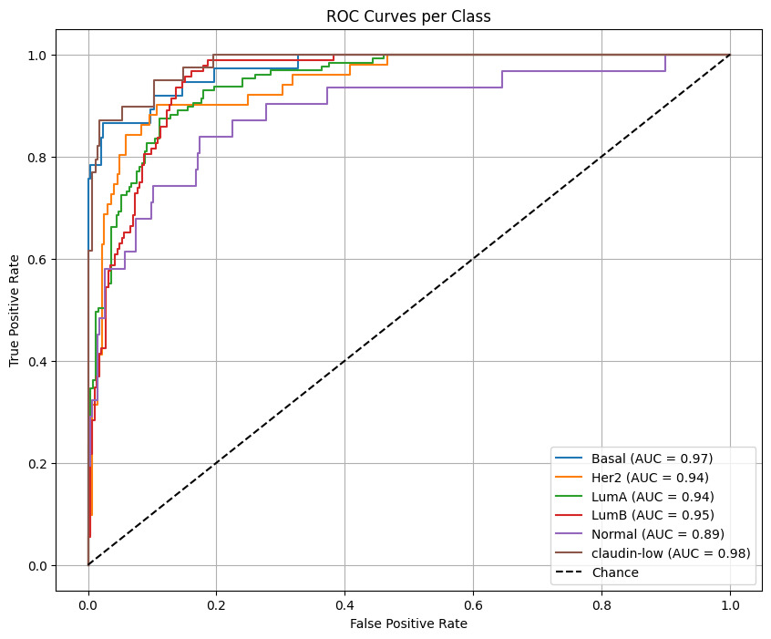
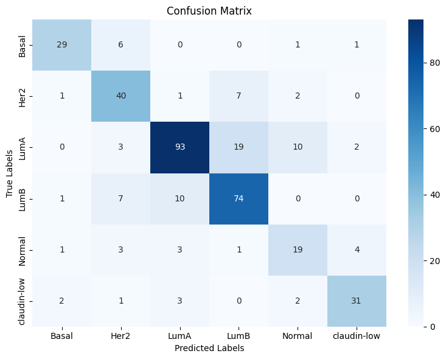
Classification Report (Weighted AUROC: 0.9475)
Class
Precision
Recall
F1-Score
Support
Basal
0.85
0.78
0.82
37
Her2
0.67
0.78
0.72
51
LumA
0.85
0.73
0.78
127
LumB
0.73
0.80
0.77
92
Normal
0.56
0.61
0.58
31
Claudin-low
0.82
0.79
0.81
39
Accuracy
0.76
377
Macro Avg
0.75
0.75
0.75
377
Weighted Avg
0.77
0.76
0.76
377
Model Explainability:
Coefficients/Feature importance for all classes: The plots below show the top 10 contributing features based on the absolute value of the coefficients. Using the coefficients plots obtained here, we will inspect the top 6 features and study if they agree with the clinical literature. In our study, we will dive deeper into model interpretation for only class 'Basal'. Basal-like subtype is the most aggressive and has the poorest prognosis among the breast cancer subtypes listed, with a 58% 5-year overall survival and frequent relapses
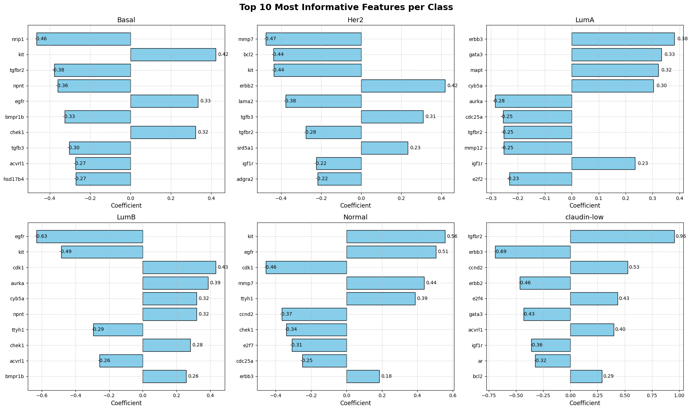
Figure 15: Logistic Regression Top 10 Most Informative Features Per Class
Detailed study for class 'Basal' with plots and discussion/interpretation: Here, we examine the coefficients' signs and the nature of the features and see if they agree with clinical literature. To be specific, if the top feature is a gene, we observe if the coefficient sign for the gene is positive or not if the gene should be upregulated for class 'Basal' and coefficient sign is negative if the gene should be downregulated for class 'Basal'. If the top feature is a clinical feature, then we study clinical feature's nature (whether it's directly proportional to the aggressiveness of the cancer or inversely proportional).
Gene-Level Insights with Clinical Relevance
Gene
Coefficient Sign
Role / Other Relevant Info
Coefficients' signs Matches Clinical Literature?
nrip1
Negative
High expression in Lum subtypes, supporting cell proliferation. Although not among the top ten genes in LumA/B in our model, they have the largest positive coefficients in these subtypes compared to the other subtypes [6].
Yes. Known to be lowly expressed in basal-like subtype [6].
kit
Positive
Tyrosine kinase growth factor, co-expressed with EGFR in basal-like subtypes [7].
Yes. Overexpressed in basal-like subtype [7].
tgfbr2
Negative
Tumor suppressor in normal tissue [8].
Small, almost zero coefficient in “Normal” class in our model.
Yes. Low expression in basal-like tissue compared to normal tissue, but it’s also lowly expressed in other subtypes [8].
nptnt
Negative
Extracellular matrix protein involved in bone formation whose downregulation reduces metastatic spread to the bone [9].
No clinical data supporting differential expression in the basal-like subtype.
chek1
Positive
Promotes epithelial to mesenchymal transition (EMT) and enhances migration and invasion ability.
Correlated with poor survival [10].
Yes. Known to be upregulated and a marker for basal-like subtypes [10].
egfr
Positive
Tyrosine kinase growth factor.
Correlated with poor survival rate and frequent relapses.
Overactivation results in aberrant signaling and uncontrolled cell growth and proliferation [11,12].
Yes. Known to be overexpressed [11,12].
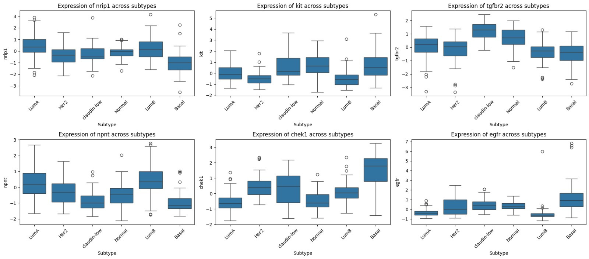
Figure 16: Logistic Regression Boxplots for Top 6 Genes
The coefficient signs for the top 6 features (here, all 6 features are genes) and the nature of those genes (upregulated or downregulated) were consistent, showing that the model captures meaningful patterns and provides the predicted probability. The top six genes with the largest coefficients are consistent with clinical data, i.e., genes with large positive coefficients are known to be upregulated, while those with large negative coefficients are known to be downregulated. The exception was NPNT, whose large negative coefficient is not backed by clinical data, which does not describe any differential expression of this gene in basal-like subtype.
References
van 't Veer, L. J., Dai, H., Van De Vijver, M. J., He, Y. D., Hart, A. A. M., Mao, M., Peterse, H. L., Van Der Kooy, K., Marton, M. J., Witteveen, A. T., Schreiber, G. J., Kerkhoven, R. M., Roberts, C., Linsley, P. S., Bernards, R., & Friend, S. H. (2002).Gene expression profiling predicts clinical outcome of breast cancer. Nature, 415(6871), 530–536.
https://doi.org/10.1038/415530a
Curtis, C., Shah, S. P., Chin, S.-F., Turashvili, G., Rueda, O. M., Dunning, M. J., Speed, D., Lynch, A. G., Samarajiwa, S., Yuan, Y., Gräf, S., Ha, G., Haffari, G., Bashashati, A., Russell, R., McKinney, S., Langerød, A., Green, A., Provenzano, E., Wishart, G., Pinder, S., Watson, P., Markowetz, F., Murphy, L., Ellis, I., Purushotham, A., Børresen-Dale, A.-S., Brenton, J. D., Tavaré, S., Caldas, C., & Aparicio, S. (2012). The genomic and transcriptomic architecture of 2,000 breast tumours reveals novel subgroups. Nature, 486(7403), 346–352.
https://doi.org/10.1038/nature10983
Clarke, C., Madden, S. F., Doolan, P., Aherne, S. T., Joyce, H., O’Driscoll, L., Gallagher, W. M., Hennessy, B. T., Moriarty, M., Crown, J., Kennedy, S., & Clynes, M. (2013). Correlating transcriptional networks to breast cancer survival: A large-scale coexpression analysis. Carcinogenesis, 34(10), 2300–2308.
https://doi.org/10.1093/carcin/bgt208
Bertucci, F., Finetti, P. & Birnbaum, D. Basal Breast Cancer: A Complex and Deadly Molecular Subtype. Curr. Mol. Med. 12, 96-110 (2012).
Aziz, M. H. et al. Suppressing NRIP1 inhibits growth of breast cancer cells in vitro and in vivo. Oncotarget 6, 39714-39724 (2015).
Nalwoga, H., Arnes, J. B., Wabinga, H. & Akslen, L. A. Expression of EGFR and c-kit is associated with the basal-like phenotype in breast carcinomas of African women. APMIS Acta Pathol. Microbiol. Immunol. Scand. 116, 515-525 (2008).
Chen, C. et al. TGFβ isoforms and receptors mRNA expression in breast tumours: prognostic value and clinical implications. BMC Cancer 15, 1010 (2015).
Wang, D. et al. NPNT promotes early-stage bone metastases in breast cancer by regulation of the osteogenic niche. J. Bone Oncol. 13, 91-96 (2018).
Kim, H.-J., Seo, B.-G., Seo, E.-C., Lee, K.-M. & Hwangbo, C. Checkpoint Kinase 1 (CHK1) Functions as Both a Diagnostic Marker and a Regulator of Epithelial-to-Mesenchymal Transition (EMT) in Triple-Negative Breast Cancer. Curr. Issues Mol. Biol. 44, 5848-5865 (2022).
Park, H. S. et al. High EGFR gene copy number predicts poor outcome in triple-negative breast cancer. Mod. Pathol. 27, 1212-1222 (2014).
Leidy, J., Khan, A. & Kandil, D. Basal-Like Breast Cancer: Update on Clinicopathologic, Immunohistochemical, and Molecular Features. Arch. Pathol. Lab. Med. 138, 37-43 (2014).